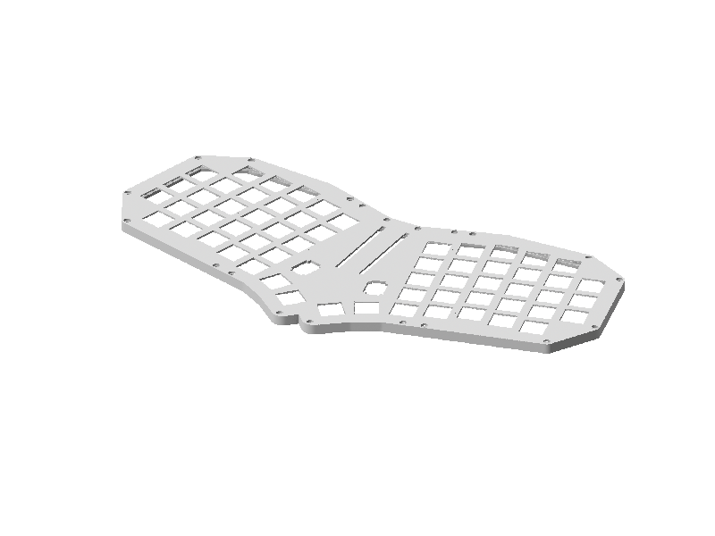
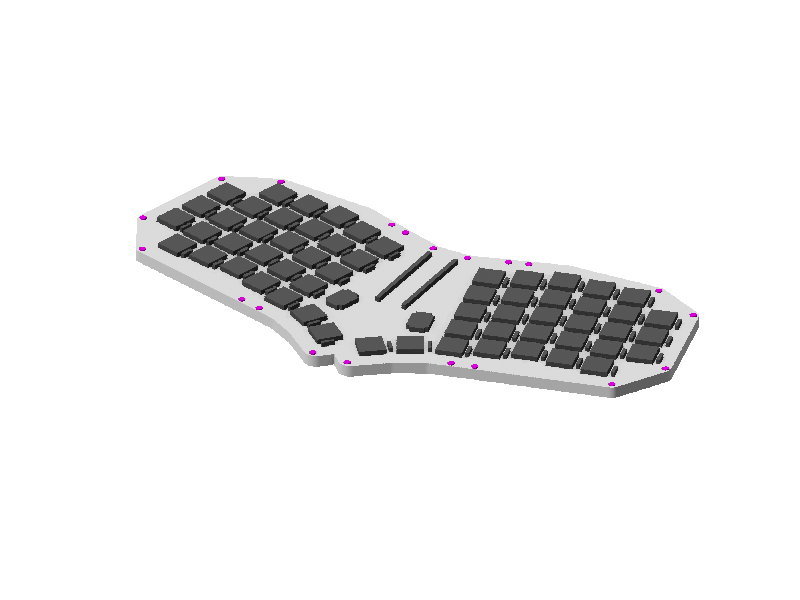

plate
Drafted with AI, not yet reviewed
sdf-native the board's KiCad drawings as SVG, offset and combined as fields
The Cryptodancer keyboard’s plate, the wall round its board and the back frame, from the board’s KiCad drawings, held together by M2 screws in heat-set inserts, and cut into parts that fit a printer.
Ported from src/cryptodancer/plate.scad. It differs in:
- the diodes’ pockets: OpenSCAD rounds their corners by 0.99 with offset(0.99) offset(-0.99), which a field cannot do to an imported outline, so they stay sharp, at most 0.41 further out at each corner;
- the encoders’ spacer rings, grown by 2 with round corners, where offset(2, $fn = 1) cuts them off straight, at most 0.59 further out;
- the reference parts, OpenSCAD’s
%ones, drawn in colour only while REFERENCE is true, since every draw is exported; the board’s holes alone are nine tenths of the tree, so it is false unless set.
- Compared with the original: within 0.59 mm, at the encoders’ rings.


Files


Source
// The Cryptodancer keyboard's plate, the wall round its board and the back // frame, from the board's KiCad drawings, held together by M2 screws in // heat-set inserts, and cut into parts that fit a printer. // // Ported from src/cryptodancer/plate.scad. It differs in: // - the diodes' pockets: OpenSCAD rounds their corners by 0.99 with // offset(0.99) offset(-0.99), which a field cannot do to an imported // outline, so they stay sharp, at most 0.41 further out at each corner; // - the encoders' spacer rings, grown by 2 with round corners, where // offset(2, $fn = 1) cuts them off straight, at most 0.59 further out; // - the reference parts, OpenSCAD's `%` ones, drawn in colour only while // REFERENCE is true, since every draw is exported; the board's holes // alone are nine tenths of the tree, so it is false unless set. // idiom sdf-native: the board's KiCad drawings as SVG, offset and combined as fields // view the assembly: // view with the board, screws and inserts: REFERENCE = true import "keycap/screws" as screws; import "keycap/inserts" as inserts; // --- Parameters --- const PART = "all"; // "all", "plate", "screws", "top-1", "top-2", "bottom" const REFERENCE = false; // the board, screws and inserts, in colour const BOARD_T = 1.25; const PLATE_T = 1.3; const PLATE_GAP = 0.5; const WALL_T = 5.0; const WALL_H = 3.0; const WALL_GAP = 0.25; const BACK_FRAME_T = 2.0; const BACK_FRAME_OVERLAP = 2.5; const DIODE_H = 1.4; // The KiCad drawings' size, and how far the components' layers are off // the edge's. const K = [300.0, 150.0]; const K_O = [1.3, 5.5]; // One side's screws; symmetric_x mirrors them onto the other. const SCREWS = [ [10.0, -70.7], [56.0, -45.2], [68.0, -42.0], [137.1, -23.0], [152.5, 4.5], [137.7, 58.3], [110.3, 70.9], [40.0, 61.2], [30.0, 57.8], [10.0, 51.0], ]; // --- The board --- // A layer of the board's drawing, centred as the edge is. fn layer(name, off) { svg(`cryptodancer-${name}.svg`).move([-global::K[0] / 2 - off[0], -global::K[1] / 2 - off[1]]) } let edge = layer("edge", [0, 0]); let diodes = layer("diodes", K_O); let encoders = layer("encoders", K_O); let switches = layer("switches", K_O).offset(-0.5); // The controller's two rows of 20 header pins. let header = rect([2.54, 21 * 2.54]); let controller = union(header.move([2.54 * 3, 17]), header.move([-2.54 * 3, 17])); let outside = edge.offset(WALL_GAP + WALL_T); // --- Parts --- // Each part reaches into the next, so that no two meet on a face, where // their union's field would be 0 inside the solid. let base = BOARD_T / 2; let plate = union( outside.difference(union([switches, encoders, controller])) .extrude([PLATE_GAP, PLATE_GAP + PLATE_T]) .difference(diodes.extrude([0, DIODE_H])), encoders.offset(2).difference(encoders).extrude([0, PLATE_GAP + PLATE_T]), ).move([0, 0, base]); let wall_top = base + PLATE_GAP; let wall = outside.difference(edge.offset(WALL_GAP)) .extrude([wall_top - WALL_H - BACK_FRAME_T, wall_top + PLATE_T]); let back_frame = outside.difference(union([edge.offset(-BACK_FRAME_OVERLAP), diodes])) .extrude([wall_top - WALL_H - BACK_FRAME_T, wall_top - WALL_H]); // --- Fasteners --- // From the top, M2 screws in holes as wide as them, under heads 4 across; // from the bottom, CNC Kitchen's M2 inserts, 3.2 across and 3 deep, the // screw's hole on through. let screw_hole = screws::hole(2, 6, #{counterbore: 4}).move([0, 0, 1]); let insert_hole = union(inserts::hole("M2", #{depth: 3}), screws::hole(2, 20)) .reflect_z() .move([0, 0, -WALL_H / 2 - BACK_FRAME_T]); let fastenings = union(SCREWS.map(|p| union(screw_hole, insert_hole).move([p[0], p[1], 0]))).symmetric_x(); let assembly = union([plate, wall, back_frame]).difference(fastenings); // --- Splitting --- // The cut between the bottom's middle part and its sides. let partitioner = polygon([[24, 100], [77, -100], [-77, -100], [-24, 100]]).extrude(50); let top = assembly.intersection(-z).rotate_y(180); let bottom = assembly.intersection(z); // --- Reference --- // Her M2x4 screws, 1.75 across for 3.8 under heads 3.5 across and 1.75 // tall, and M2 inserts 3.5 across and 3 long. let screw = screws::screw(#{d: 1.75, pitch: 0.4, head: #{kind: "socket", dk: 3.5, k: 1.75}}, 3.8); let insert = inserts::insert(#{length: 3, d: 3.5, hole: 3.2}); let fastening_screws = union(SCREWS.map(|p| screw.move([p[0], p[1], 1]))).symmetric_x(); let fastening_inserts = union(SCREWS.map(|p| insert.reflect_z().move([p[0], p[1], -WALL_H / 2 - BACK_FRAME_T]))).symmetric_x(); fn board(diodes, encoders, switches, controller, edge) { let parts = union([diodes, encoders, switches, controller]).extrude([0, 5]); let holes = layer("holes", [0, 0]); [parts, edge.extrude(global::BOARD_T), holes.extrude(global::BOARD_T + 0.01)] } // --- Output --- if PART == "all" { draw(assembly); if REFERENCE { let b = board(diodes, encoders, switches, controller, edge); draw_rgb(b[0], 0.4, 0.4, 0.4); draw_rgb(b[1].difference(b[2]), 1.0, 0.8, 0.8); draw_rgb(fastening_screws, 1.0, 0.0, 1.0); draw_rgb(fastening_inserts, 1.0, 1.0, 0.0); } } else if PART == "plate" { draw(assembly); if REFERENCE { draw_rgb(partitioner, 0.6, 0.6, 0.6); } } else if PART == "screws" { draw_rgb(fastening_screws, 1.0, 0.0, 1.0); draw_rgb(fastening_inserts, 1.0, 1.0, 0.0); } else if PART == "top-1" { draw(top.intersection(x).move([K[0] / 4, 0, 0])); } else if PART == "top-2" { draw(top.intersection(-x).move([-K[0] / 4, 0, 0])); } else if PART == "bottom" { draw(bottom.intersection(-y).intersection(partitioner).move([0, -40, 0])); draw(bottom.intersection(y).intersection(partitioner).move([0, 40, 0])); draw(bottom.intersection(-x).difference(partitioner).rotate_z(-15).move([-45, 0, 0])); draw(bottom.intersection(x).difference(partitioner).rotate_z(15).move([45, 0, 0])); } else { throw `PART must be all, plate, screws, top-1, top-2 or bottom, got ${PART}`; }